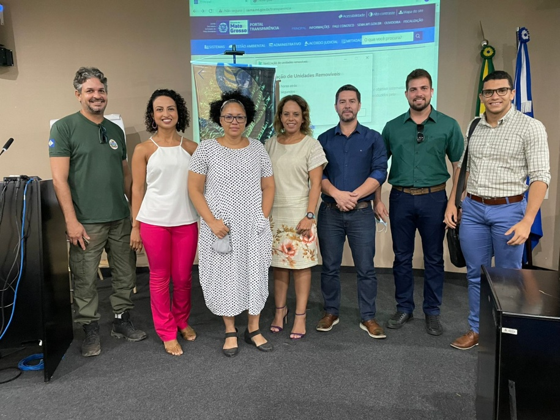

Notícias Cidade
Destaque
Servidores participam de capacitação sobre licenciamento ambiental descentralizado
Postado 23 Novembro 2021

Servidores da Secretaria de Agricultura e Meio Ambiente de Primavera do Leste participaram neste mês de uma capacitação que trouxe como tema principal o licenciamento ambiental descentralizado.
Realizada pela Superintendência de Gestão da Desconcentração e Descentralização (SGDD), com apoio da Superintendência de Educação Ambiental e Atendimento ao Cidadão (SUEAC), o curso possibilitou uma interação e troca de experiências entre municípios e Estado
De acordo com Toninho Filho, secretário da pasta, o curso é muito importante para o município atuar com excelência nesse eixo. "O Estado através do CONSEMA trouxe a nova resolução do Licenciamento ambiental descentralizado, onde os municípios terão autonomia para licenciar várias atividades onde antes era feito através da SEMA, que mesmo com agilidade do Estado, ainda custava tempo para os fiscais irem até os empreendimentos fazer as vistoria, com essa nova resolução, tanto o licenciamento como as vistoria, ficarão a cargo dos servidores, assim o tempo será muito menor que se fosse feito pelo Estado", destaca.

O curso trouxe ainda aulas expositivas sobre a estrutura organizacional da secretaria municipal, articulação institucional, licenciamento ambiental de atividades de indústria (LAC e LAS), de infraestrutura, de mineração, de serviços e atividades agropecuárias.
As aulas aconteceram de 8 a 12 de novembro, na modalidade presencial e online, para profissionais que fazem parte do quadro de servidores das Prefeituras Municipais e, nesta edição, profissionais autônomos.
Também faz parte do conteúdo informações sobre o Cadastro Ambiental Rural (CAR), outorga de recursos hídricos, educação ambiental, resíduos sólidos, Unidades de Conservação, legislação ambiental, aula prática de licenciamento e Georreferenciamento das ações descentralizadas.